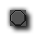
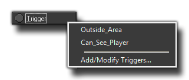

Trigger Event
A trigger event is an event that permits the user to define special
conditions which will "trigger" a set of code or actions to run.
When you add a trigger event you will be presented with a menu of
sub events like this:

The first two things you see on that menu are just examples of
triggers that have been defined previously (these were created to
give an example and are not standard GameMaker: Studio
triggers), and the last section, "Add/Modify Triggers", is where
you would define them so that they show up on this menu.
The trigger event has been made obsolete in GameMaker: Studio and the references to it in this manual are only due to the fact that previous versions of GameMaker may have them. In this case it is important to know how they worked so as to make importing these older projects easier. For more in depth information on triggers, please see the following section of the manual - Obsolete Functions: Triggers